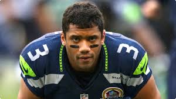
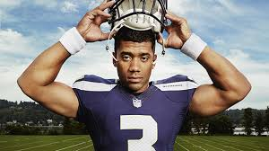
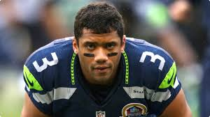
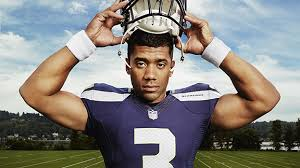

Russell Wilson
Wilson started out his career in 2008, playing football and baseball at North Carolina State University. After two years he transferred to the University of Wisconsin where he played Quarterback and made a name for himself by winning the Griese-Brees Big Ten Quarterback of the Year award. Wilson had so much success in his 2011 season, he placed in the top ten list for the Heisman Trophy award. For all of this success, Wilson would be picked up late in the 2012 draft by the Seattle Seahawks and was met with high skepticism. However, despite this scepticism, Wilson led the team to its first Superbowl victory in franchise history. Wilson signed a 4 year contract with the Seattle Seahawks in 2015 for 87.6 million dollars, making him the second highest paid player in the NFL at that time. Wilson is currently ranked as the second highest passer in the NFL. On top of Wilson’s success on the field, he has brought new life into the fanbase of the Seahawks and the profitability of the franchise itself. While tickets sales were steadily increasing each year for the Seahawks, the franchise saw a steeper increase in sales after Wilson began his career with them. Through the 2010 and 2011 season, ticket sales increased by approximately 1 million per year. However, the ticket sales from the 2012 season into the 2013 season jumped up by 3 million dollars and the two years that followed increased the sales by 4 million each year. This was directly affected by the steady increase of home game attendance as well as the average ticket price per game. Since Wilson started with the Seahawks in 2012, the franchise value has more than doubled from 994,000,000 in 2012 to 2,225,000,000 in 2016. .
Russell Wilson was only the second African-American Quarterback to lead their team to Super Bowl victory in NFL history. When the Seattle Seahawks visited the White House in May of 2014, President Obama was quoted as saying “Russell became only the second African-American quarterback ever to win a Super Bowl. And the best part about it is nobody commented on it, which tells you the progress that we’ve made, although we’ve got more progress to make.’’ (Keim, 2014) Russell is an active volunteer and supporter of many well-known charities such as Seattle Children’s Hospital and Boys & Girls Clubs of America. Russell launched his own charitable foundation called “Why Not You” that partners with organizations such as Strong against Cancer, the National Domestic Violence Hotline, Pass the Peace, and many others. The purpose of this organization is to empower change, one child at a time. Each year, Wilson co-hosts a charity golf event in Cle Elum with NASCAR driver Kasey Kahne, as a fundraiser for his foundation. In August of 2016, Wilson’s Why Not You Foundation raised over 1,000,000.00 and presented the funds to Seattle Children’s Hospital (Chu, 2016). Wilson’s Net Worth as of 2016 was $120 Million (Peter, 2016) Wilson married singer Ciara on July 6th, 2016 in Peckforton Castle in Chesire, England (Harrison, 2016). He currently resides in Seattle, WA with his wife, Ciara, daughter Sienna, born April 28th, 2017 (Press, 2017), Ciara’s son, and their two Dreat Danes, Prince and Naomi.
1.Chu, M. (2016, August 25). Russell Wilson's Why Not You Foundation Raises More Than $1 Million for Seattle Children's Hospital. Retrieved from People Celebrity: http://people.com/celebrity/russell-wilsons-foundation-raises-1-million-for-childrens-hospital/
2.Harrison, L. (2016, July 6). Ciara and Russell WIlson are Married. Retrieved from Eonline: http://www.eonline.com/news/776433/ciara-and-russell-wilson-are-married
3.Keim, J. (2014, May 11). Seahawks Praised at White House. Retrieved from ESPN: http://www.espn.com/nfl/story/_/id/10965509/super-bowl-champion-seattle-seahawks-visit-white-house-praised-president-barack-obama
4.Peter, J. (2016, October 20). Russell Wilson opens up on Presedential Election, Colin Kaepernick and more. Retrieved from USAtoday:https://www.usatoday.com/story/sports/nfl/seahawks/2016/10/20/russell-wilson-seattle-presidential-election-colin-kaepernick/92480016/
{kind=link}
{kind=link}